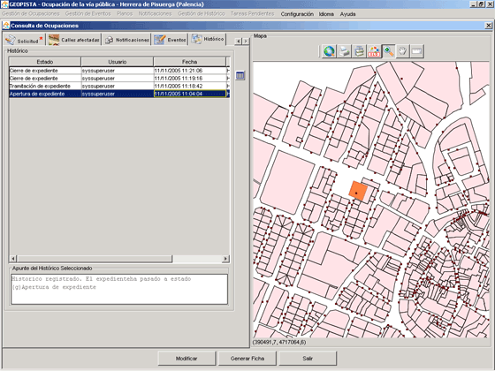

Consulta de Licencias de Ocupación de la Vía Pública
Con esta opción el usuario podrá
consultar una Licencia de Ocupación del sistema.
En primer lugar el usuario
seleccionará la opción de menú correspondiente a la Consulta de una Licencia de Ocupación.

Una vez seleccionada la opción,
la aplicación muestra el formulario de consulta. Todos los campos están en modo no editable.
El formulario se divide en:
Mapa
Botonera
Expediente
Corresponde a los datos propios a la
solicitud de ocupación.

Los campos que se presentan en
esta pestaña son:
- Datos de Expediente
- Número de Expediente que el usuario quiere consultar. El botón de la derecha del campo, abre una ventana de
diálogo de búsqueda de Expediente. Seleccionando uno de los Expedientes resultado de la búsqueda,
y pulsando el botón de Aceptar, la aplicación cargará los datos de dicho Expediente en el
formulario de consulta de Licencia de Ocupación.

- Estado de Expediente. Estado actual en el que se encuentra el Expediente.
- Servicio Encargado de la tramitación de Expediente. Campo configurable desde la opción de menú de Configuración.
- Tipo Tramitación. La tramitación puede ser Ordinaria, la normal y la habitual, y
de Urgencia, en la que todos los plazos se reducen a la mitad.
- Asunto
- Fecha Apertura de Expediente.
- Forma de Incicio. Los expedientes administrativos se inician de oficio, comienza por la
propia voluntad de la Administración que va a resolver, y a instancia de parte, toda aquella que
no viene de la Administración que va a resolver, es decir, de cualquier administrado o de otra Administración.
- Silencio Administrativo. Chequeado si resuelve a favor, y no chequeado si resuelve en contra.
- Núm. Folios
- Responsable del Expediente. Campo configurable desde la opción de menú de Configuración.
- Plazo de Vencimiento
- Núm. Días
- Finaliza. Tipo de finalización del Expediente, que puede ser por resolución expresa,
o por silencio administrativo.
- Observaciones hechas durante la tramitación de Expediente.
Volver
Solicitud
Corresponde a los datos propios a la
solicitud.
Los campos marcados con * son obligatorios.

Los campos que se presentan en
esta pestaña son:
Volver
Solicitante
Corresponde a los datos del solicitante de Licencia de Ocupación.
Una Licencia de ocupación tiene que tener obligatoriamente asignado un titular.
Los campos marcados con * son obligatorios.

Los campos que se presentan en
esta pestaña son:
- Datos Personales
- DNI/CIF del solicitante.
- Nombre
- Primer Apellido
- Segundo Apellido
- Datos Notificación
- Vía Notificación. La forma en la que se realizará la notificación de un cambio de estado
del expediente, susceptible de notificación, al propietario de la Licencia. Los valores pueden ser
correo postal o email.
- Fax
- Teléfono móvil
- Email
- Campos referentes a la dirección postal del propietario:
- Nombre de la vía.
- Número de la vía.
- Planta.
- Letra.
- Portal.
- Escalera.
- Código Postal.
- Municipio.
- Provincia.
- Notificar al Solicitante. Siempre se notifica al titular de la Licencia de Ocupación.
Volver
Representante
Corresponde a los datos del representante del titular
de la Licencia de Ocupación. Una Licencia de ocupación, puede tener representante. No es obligatorio para la
creación de Licencia.
Si una Licencia de Ocupación tiene
representante, entonces los campos marcados con * han de ser cumplimentados obligatoriamente, o de lo
contrario no se podrá crear la Licencia de Ocupación.

Los campos que se presentan en
esta pestaña son:
- Datos Personales
- DNI/CIF del representante.
- Nombre.
- Primer Apellido.
- Segundo Apellido.
- Datos Notificación
- Vía Notificación. La forma en la que se realizará la notificación de un cambio de estado
del expediente, susceptible de notificación, al representante de la Licencia de Ocupación. Los valores pueden ser
correo postal o email.
- Fax.
- Teléfono móvil.
- Email.
- Campos referentes a la dirección postal del representante:
- Nombre de la vía.
- Número de la vía.
- Planta.
- Letra.
- Portal.
- Escalera.
- Código Postal.
- Municipio.
- Provincia.
- Notificar al Representante. Chequeado si el representante de la Licencia, va a ser
notificado durante el transcurso de la tramitación de expediente.
Volver
Calles Afectadas
Se muestran en una lista las calles afectadas por la ocupación.

Las operaciones que se pueden realizar son:
- Buscar calle afectada. Deshabilitado.
- Añadir una nueva calle. Deshabilitado.
- Eliminar Calle Afectada. Deshabilitado.
- Imprimir Informe de las calles afectadas.
Volver
Notificaciones
Muestra en una tabla las notificaciones del Expediente.

Los campos que se muestran en esta pestaña son:
- Notificaciones
Para cada una de las notificaciones, se muestra:
- Estado de la Notificacion. Los estado por los que puede pasar una notificación son:
- Pendiente de Notificación
- En espera de Acuse de Envío. Falta por recibir el acuse de recibo de la Notificación
que se ha enviado al propietario y/o al representante.
- En espera de Acuse de Reenvío. Al no recibir el acuse de envío, se vuelve a enviar la notificación
al propietario y/o al representante.
- Notificada
- Fecha de Vencimiento. Fecha antes de la cual se tiene que enviar la notificación al interesado.
- DNI Interesado al que se envía la notificación.
- Fecha de Notificación. Fecha en la que el estado de la notificación pasa a ser notificada.
- Fecha de Reenvío. Fecha en la que el estado de la Notificación pasa a ser acuse de reenvío.
- Datos de Notificación de la Notificación Seleccionada
Seleccionada una notificación de la tabla anterior, se muestran los siguientes datos:
- Nombre y Apellidos del interesado al que se le enviará la notificación.
- Dirección a la que se envía la notificación, si es por correo postal.
- Código Postal, Municipio y Provincia
- Notificar por. Modo de notificar al interesado.
- Entregada a. Persona a la que se ha entregado la notificación.
Volver
Eventos
Muestra en una tabla los eventos del Expediente.

- Eventos
Para cada una de los eventos, se muestra:
- Número de Evento.
- Fecha en la que se produjo el evento.
- Revisado. Chequeado si ha sido revisado.
- Revisado por. Usuario que ha chequeado el evento como revisado. Si el evento
no ha sido marcado como revisado, el campo aparecerá en blanco.
- Descripción. Detalle del evento.
- Descripción del Evento Seleccionado
Seleccionado un evento de la tabla anterior, se muestra el detalle del mismo, facilitando así
su lectura al usuario.
Volver
Histórico
Muestra en una tabla las entradas al histórico del Expediente.

El histórico se compone de dos tipos de entradas:
- estados por los que va pasando el Expediente.
Entrada realizada por el sistema.
- apuntes que inserta el usuario acerca del seguimiento que va haciendo del Expediente.
- Histórico
Para cada una de las entradas, muestra:
- Estado en el que se encontraba el expediente cuando se produjo su entrada en el sistema.
- Usuario que introdujo el histórico. Puede ser una entrada de usuario o una entrada del sistema.
- Fecha de entrada del histórico en el sistema.
- Apunte. Detalle del histórico.
 Generar Listado del Histórico. Genera un fichero de texto con las entradas del Histórico del Expediente.
Generar Listado del Histórico. Genera un fichero de texto con las entradas del Histórico del Expediente.- Apunte del Histórico Seleccionado
Seleccionado un histórico de la tabla anterior, se muestra
el detalle del apunte insertado por el usuario o por el sistema, facilitando así su lectura al usuario.
Volver
Mapa
Sección que muestra el mapa del Municipio del
que se están gestionando las Licencias de Ocupación. Se compone de una botonera que permite al usuario
moverse y pintar la ocupación en el mapa:
 Permite hacer un zoom del mapa. Para ello, basta con pulsar el botón,
colocarse sobre el mapa e ir pulsando el ratón hasta conseguir el zoom deseado. (*Nota: Si se desea se puede hacer un zoom
directo también con esta herramienta, manteniendo pulsado el botón izquierdo del ratón e
inmediatamente enmarcar la imagen deseada. Con el botón derecho se consigue el efecto contrario).
Permite hacer un zoom del mapa. Para ello, basta con pulsar el botón,
colocarse sobre el mapa e ir pulsando el ratón hasta conseguir el zoom deseado. (*Nota: Si se desea se puede hacer un zoom
directo también con esta herramienta, manteniendo pulsado el botón izquierdo del ratón e
inmediatamente enmarcar la imagen deseada. Con el botón derecho se consigue el efecto contrario). Permite desplazar el mapa en las coordenas Norte, Sur, Este y Oeste. Basta con pulsar el botón,
colocarse sobre el mapa y manteniendo pulsado el ratón, arrastrar el mapa hacia las coordenadas deseadas.
Permite desplazar el mapa en las coordenas Norte, Sur, Este y Oeste. Basta con pulsar el botón,
colocarse sobre el mapa y manteniendo pulsado el ratón, arrastrar el mapa hacia las coordenadas deseadas.
Volver
Botón Modificar
Abre la opción de menú de
Modificación de Licencias de Ocupación, para el Expediente que se está consultando.
Botón Generar Ficha
Imprime la ficha del Expediente.
Botón Salir
Cierra el formulario de Consulta.
Volver
 - posiciona en el mapa el emplazamiento actualmente seleccionado en la tabla.
- posiciona en el mapa el emplazamiento actualmente seleccionado en la tabla. - posiciona en el mapa todos los emplazamientos de la licencia de ocupación y centra la imagen.
- posiciona en el mapa todos los emplazamientos de la licencia de ocupación y centra la imagen. Visualizar anexo. Sólo si el sistema operativo es Windows, se visualizará el contenido del anexo seleccionado.
Visualizar anexo. Sólo si el sistema operativo es Windows, se visualizará el contenido del anexo seleccionado. Añadir anexo. Deshabilitado.
Añadir anexo. Deshabilitado. Eliminar anexo. Deshabilitado.
Eliminar anexo. Deshabilitado.